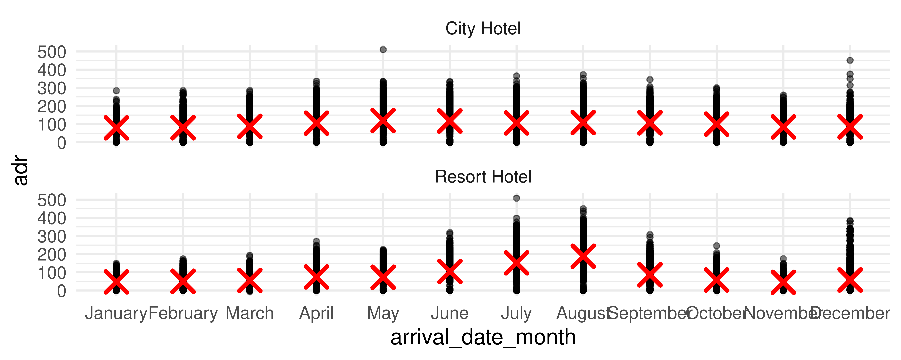

# load packages
library(tidyverse)
library(countdown)
library(scales)
library(ggthemes)
library(glue)
library(gt) # For "great" tables
library(MoMAColors) # For color palettes inspired by artworks at MomA
# set theme for ggplot2
ggplot2::theme_set(ggplot2::theme_minimal(base_size = 14))
# set width of code output
options(width = 65)
# set figure parameters for knitr
knitr::opts_chunk$set(
fig.width = 7, # 7" width
fig.asp = 0.618, # the golden ratio
fig.retina = 3, # dpi multiplier for displaying HTML output on retina
fig.align = "center", # center align figures
dpi = 300 # higher dpi, sharper image
)Data wrangling + tidying - II
Lecture 4
Dr. Mine Çetinkaya-Rundel
Duke University
STA 313 - Spring 2024
Warm up
Check-in
Any high-level questions on HW 1?
Setup
Transforming and reshaping a single data frame (cont.)
From last time: Monthly bookings
Any questions about recreating any aspect of this plot?
From last time: Monthly bookings
Reveal below for code for creating the previous plot.
Code
hotels <- read_csv("https://raw.githubusercontent.com/rfordatascience/tidytuesday/master/data/2020/2020-02-11/hotels.csv")
hotels <- hotels |>
mutate(
arrival_date_month = fct_relevel(arrival_date_month, month.name),
season = case_when(
arrival_date_month %in% c("December", "January", "February") ~ "Winter",
arrival_date_month %in% c("March", "April", "May") ~ "Spring",
arrival_date_month %in% c("June", "July", "August") ~ "Summer",
TRUE ~ "Fall"
),
season = fct_relevel(season, "Winter", "Spring", "Summer", "Fall")
)
hotels |>
count(season, hotel, arrival_date_month) |>
ggplot(aes(x = arrival_date_month, y = n, group = hotel, linetype = hotel)) +
geom_line(linewidth = 0.8, color = "cornsilk4") +
geom_point(aes(shape = season, color = season), size = 4, show.legend = FALSE) +
scale_x_discrete(labels = month.abb) +
scale_color_colorblind() +
scale_shape_manual(values = c("circle", "square", "diamond", "triangle")) +
labs(
x = "Arrival month", y = "Number of bookings", linetype = NULL,
title = "Number of monthly bookings",
subtitle = "July 2015 to August 2017",
caption = "Source: Antonio, Almeida and Nunes (2019) | TidyTuesday"
) +
coord_cartesian(clip = "off") +
theme(
legend.position = c(0.12, 0.9),
legend.box.background = element_rect(fill = "white", color = "white"),
plot.subtitle = element_text(color = "cornsilk4"),
plot.caption = element_text(color = "cornsilk4")
)A few takeaways
forcats::fct_relevel()in amutate()is useful for custom ordering of levels of a factor variablesummarize()aftergroup_by()with multiple variables results in a message about the grouping structure of the resulting data frame – the message can be suppressed by defining.groups(e.g.,.groups = "drop"or.groups = "keep")summarize()also lets you get away with being sloppy and not naming your new column, but that’s not recommended!
Rowwise operations
We want to calculate the total number of guests for each booking. Why does the following not work?
# A tibble: 119,390 × 4
adults children babies guests
<dbl> <dbl> <dbl> <dbl>
1 2 0 0 NA
2 2 0 0 NA
3 1 0 0 NA
4 1 0 0 NA
5 2 0 0 NA
6 2 0 0 NA
7 2 0 0 NA
8 2 0 0 NA
9 2 0 0 NA
10 2 0 0 NA
# ℹ 119,380 more rowsRowwise operations
hotels |>
select(adults, children, babies) |>
rowwise() |>
mutate(guests = sum(c(adults, children, babies))) |>
filter(adults > 0, children > 0, babies > 0) # to show sum works# A tibble: 172 × 4
# Rowwise:
adults children babies guests
<dbl> <dbl> <dbl> <dbl>
1 2 1 1 4
2 2 1 1 4
3 2 1 1 4
4 2 1 1 4
5 2 1 1 4
6 2 1 1 4
7 2 1 1 4
8 2 2 1 5
9 2 2 1 5
10 1 2 1 4
# ℹ 162 more rowsColumnwise operations
Use across() combined with summarise() to calculate summary statistics for multiple columns at once:
# A tibble: 1 × 2
stays_in_weekend_nights stays_in_week_nights
<dbl> <dbl>
1 0.928 2.50Rows: 1
Columns: 4
$ stays_in_weekend_nights_1 <dbl> 0.9275986
$ stays_in_weekend_nights_2 <dbl> 0.9986135
$ stays_in_week_nights_1 <dbl> 2.500302
$ stays_in_week_nights_2 <dbl> 1.908286Select helpers
starts_with(): Starts with a prefixends_with(): Ends with a suffixcontains(): Contains a literal stringnum_range(): Matches a numerical range like x01, x02, x03one_of(): Matches variable names in a character vectoreverything(): Matches all variableslast_col(): Select last variable, possibly with an offsetmatches(): Matches a regular expression (a sequence of symbols/characters expressing a string/pattern to be searched for within text)
Columnwise operations
hotels |>
group_by(hotel, is_canceled) |>
summarise(
across(.cols = starts_with("stays"), list(mean = mean, sd = sd), .names = "{.fn}_{.col}")
) |>
glimpse()Rows: 4
Columns: 6
Groups: hotel [2]
$ hotel <chr> "City Hotel", "City Hotel", "Resort Hotel", "Resort…
$ is_canceled <dbl> 0, 1, 0, 1
$ mean_stays_in_weekend_nights <dbl> 0.8006836, 0.7875053, 1.1339070, 1.3352814
$ sd_stays_in_weekend_nights <dbl> 0.8615080, 0.9168195, 1.1442298, 1.1444040
$ mean_stays_in_week_nights <dbl> 2.122934, 2.266781, 3.008985, 3.440299
$ sd_stays_in_week_nights <dbl> 1.400799, 1.526787, 2.450714, 2.461699Columnwise operations
hotels |>
group_by(hotel, is_canceled) |>
summarise(
across(.cols = starts_with("stays"), list(mean = mean, sd = sd), .names = "{.fn}_{.col}"),
.groups = "drop"
)# A tibble: 4 × 6
hotel is_canceled mean_stays_in_weeken…¹ sd_stays_in_weekend_…² mean_stays_in_week_n…³
<chr> <dbl> <dbl> <dbl> <dbl>
1 City H… 0 0.801 0.862 2.12
2 City H… 1 0.788 0.917 2.27
3 Resort… 0 1.13 1.14 3.01
4 Resort… 1 1.34 1.14 3.44
# ℹ abbreviated names: ¹mean_stays_in_weekend_nights, ²sd_stays_in_weekend_nights,
# ³mean_stays_in_week_nights
# ℹ 1 more variable: sd_stays_in_week_nights <dbl>Setup for next example: hotel_summary
hotels_summary <- hotels |>
group_by(hotel, is_canceled) |>
summarise(
across(
.cols = starts_with("stays"),
list(mean = mean),
.names = "{.fn}_{.col}"
),
.groups = "drop"
)
hotels_summary# A tibble: 4 × 4
hotel is_canceled mean_stays_in_weekend_nights mean_stays_in_week_nights
<chr> <dbl> <dbl> <dbl>
1 City Hotel 0 0.801 2.12
2 City Hotel 1 0.788 2.27
3 Resort Hotel 0 1.13 3.01
4 Resort Hotel 1 1.34 3.44Mean number of stays
Mean number of stays
ae-03 - Part 3: Let’s recreate this visualization!
Livecoding
Reveal below for code developed during live coding session.
Code
hotels_summary |>
mutate(is_canceled = if_else(is_canceled == 0, "Not canceled", "Canceled")) |>
pivot_longer(
cols = starts_with("mean"),
names_to = "day_type",
values_to = "mean_stays",
names_prefix = "mean_stays_in_"
) |>
mutate(
day_type = if_else(str_detect(day_type, "weekend"), "Weekend", "Weekday")
) |>
ggplot(aes(
x = str_wrap(is_canceled, 10), y = mean_stays,
group = hotel, color = hotel
)) +
geom_point(show.legend = FALSE) +
geom_line(aes(linetype = hotel), linewidth = 1) +
facet_wrap(~day_type) +
labs(
x = "Booking status",
y = "Mean number of\nnights of stay",
color = NULL, linetype = NULL,
title = "Mean number of stays",
subtitle = "By hotel type and booking status",
caption = "Source: Antonio, Almeida and Nunes (2019) | TidyTuesday"
) +
scale_color_manual(values = c("cornsilk4", "deepskyblue3")) +
scale_y_continuous(limits = c(0, 4), breaks = 0:4) +
theme(legend.position = "bottom")tidyr 101
pivot_wider()andpivot_longer()- Incredibly useful for reshaping for plotting
- Lots of extra arguments to help with reshaping pain!
- Refer to pivoting vignette when needed

Stats
Stats < > geoms
- Statistical transformation (stat) transforms the data, typically by summarizing
- Many of ggplot2’s stats are used behind the scenes to generate many important geoms
stat |
geom |
|---|---|
stat_bin() |
geom_bar(), geom_freqpoly(), geom_histogram() |
stat_bin2d() |
geom_bin2d() |
stat_bindot() |
geom_dotplot() |
stat_binhex() |
geom_hex() |
stat_boxplot() |
geom_boxplot() |
stat_contour() |
geom_contour() |
stat_quantile() |
geom_quantile() |
stat_smooth() |
geom_smooth() |
stat_sum() |
geom_count() |
Layering with stats
Alternate: layering with stats
Statistical transformations
What can you say about the distribution of price from the following QQ plot?
Bringing together multiple data frames
Scenario 2
We…
have multiple data frames
want to want to bring them together so we can plot them
10 women in science who changed the world
| name |
|---|
| Ada Lovelace |
| Marie Curie |
| Janaki Ammal |
| Chien-Shiung Wu |
| Katherine Johnson |
| Rosalind Franklin |
| Vera Rubin |
| Gladys West |
| Flossie Wong-Staal |
| Jennifer Doudna |
Inputs
# A tibble: 10 × 2
name profession
<chr> <chr>
1 Ada Lovelace Mathematician
2 Marie Curie Physicist and Chemist
3 Janaki Ammal Botanist
4 Chien-Shiung Wu Physicist
5 Katherine Johnson Mathematician
6 Rosalind Franklin Chemist
7 Vera Rubin Astronomer
8 Gladys West Mathematician
9 Flossie Wong-Staal Virologist and Molecular Biologist
10 Jennifer Doudna Biochemist # A tibble: 9 × 2
name known_for
<chr> <chr>
1 Ada Lovelace first computer algorithm
2 Marie Curie theory of radioactivity, first woman Nobel Prize win
3 Janaki Ammal hybrid species, biodiversity protection
4 Chien-Shiung Wu experiment overturning theory of parity
5 Katherine Johnson orbital mechanics critical to sending first Americans into space
6 Vera Rubin existence of dark matter
7 Gladys West mathematical modeling of the shape of the Earth
8 Flossie Wong-Staal first to clone HIV and map its genes, which led to test for virus
9 Jennifer Doudna one of the primary developers of CRISPR Desired output
# A tibble: 10 × 5
name profession birth_year death_year known_for
<chr> <chr> <dbl> <dbl> <chr>
1 Ada Lovelace Mathematician NA NA first comp…
2 Marie Curie Physicist and Chemist NA NA theory of …
3 Janaki Ammal Botanist 1897 1984 hybrid spe…
4 Chien-Shiung Wu Physicist 1912 1997 experiment…
5 Katherine Johnson Mathematician 1918 2020 orbital me…
6 Rosalind Franklin Chemist 1920 1958 <NA>
7 Vera Rubin Astronomer 1928 2016 existence …
8 Gladys West Mathematician 1930 NA mathematic…
9 Flossie Wong-Staal Virologist and Molecular Biologist 1947 NA first to c…
10 Jennifer Doudna Biochemist 1964 NA one of the…Inputs, reminder
Joining data frames
Which, if any, *_join() function is unfamiliar?
left_join(): all rows from xright_join(): all rows from yfull_join(): all rows from both x and yinner_join(): all rows from x where there are matching values in y, return all combination of multiple matches in the case of multiple matchessemi_join(): all rows from x where there are matching values in y, keeping just columns from xanti_join(): return all rows from x where there are not matching values in y, never duplicate rows of x- …
Setup
For the next few slides…
left_join()

left_join()
# A tibble: 10 × 4
name profession birth_year death_year
<chr> <chr> <dbl> <dbl>
1 Ada Lovelace Mathematician NA NA
2 Marie Curie Physicist and Chemist NA NA
3 Janaki Ammal Botanist 1897 1984
4 Chien-Shiung Wu Physicist 1912 1997
5 Katherine Johnson Mathematician 1918 2020
6 Rosalind Franklin Chemist 1920 1958
7 Vera Rubin Astronomer 1928 2016
8 Gladys West Mathematician 1930 NA
9 Flossie Wong-Staal Virologist and Molecular Biologist 1947 NA
10 Jennifer Doudna Biochemist 1964 NAright_join()

right_join()
# A tibble: 8 × 4
name profession birth_year death_year
<chr> <chr> <dbl> <dbl>
1 Janaki Ammal Botanist 1897 1984
2 Chien-Shiung Wu Physicist 1912 1997
3 Katherine Johnson Mathematician 1918 2020
4 Rosalind Franklin Chemist 1920 1958
5 Vera Rubin Astronomer 1928 2016
6 Gladys West Mathematician 1930 NA
7 Flossie Wong-Staal Virologist and Molecular Biologist 1947 NA
8 Jennifer Doudna Biochemist 1964 NAfull_join()

full_join()
# A tibble: 10 × 4
name birth_year death_year known_for
<chr> <dbl> <dbl> <chr>
1 Janaki Ammal 1897 1984 hybrid species, biodiversity protection
2 Chien-Shiung Wu 1912 1997 experiment overturning theory of parity
3 Katherine Johnson 1918 2020 orbital mechanics critical to sending first A…
4 Rosalind Franklin 1920 1958 <NA>
5 Vera Rubin 1928 2016 existence of dark matter
6 Gladys West 1930 NA mathematical modeling of the shape of the Ear…
7 Flossie Wong-Staal 1947 NA first to clone HIV and map its genes, which l…
8 Jennifer Doudna 1964 NA one of the primary developers of CRISPR
9 Ada Lovelace NA NA first computer algorithm
10 Marie Curie NA NA theory of radioactivity, first woman Nobel P…inner_join()

inner_join()
# A tibble: 7 × 4
name birth_year death_year known_for
<chr> <dbl> <dbl> <chr>
1 Janaki Ammal 1897 1984 hybrid species, biodiversity protection
2 Chien-Shiung Wu 1912 1997 experiment overturning theory of parity
3 Katherine Johnson 1918 2020 orbital mechanics critical to sending first Am…
4 Vera Rubin 1928 2016 existence of dark matter
5 Gladys West 1930 NA mathematical modeling of the shape of the Earth
6 Flossie Wong-Staal 1947 NA first to clone HIV and map its genes, which le…
7 Jennifer Doudna 1964 NA one of the primary developers of CRISPR semi_join()

semi_join()
anti_join()

anti_join()
Putting it altogether
# A tibble: 10 × 5
name profession birth_year death_year known_for
<chr> <chr> <dbl> <dbl> <chr>
1 Ada Lovelace Mathematician NA NA first comp…
2 Marie Curie Physicist and Chemist NA NA theory of …
3 Janaki Ammal Botanist 1897 1984 hybrid spe…
4 Chien-Shiung Wu Physicist 1912 1997 experiment…
5 Katherine Johnson Mathematician 1918 2020 orbital me…
6 Rosalind Franklin Chemist 1920 1958 <NA>
7 Vera Rubin Astronomer 1928 2016 existence …
8 Gladys West Mathematician 1930 NA mathematic…
9 Flossie Wong-Staal Virologist and Molecular Biologist 1947 NA first to c…
10 Jennifer Doudna Biochemist 1964 NA one of the…*_join() functions
- From dplyr
- Incredibly useful for bringing datasets with common information (e.g., unique identifier) together
- Use
byargument when the names of the column containing the common information are not the same across datasets - Always check that the numbers of rows and columns of the result dataset makes sense
- Refer to two-table verbs vignette when needed
Visualizing joined data
The following plot displays some information from each of the three data frames:

But first…
What is the plot in the previous slide called?
Livecoding
Reveal below for code developed during live coding session.
Transform
scientists_longer <- scientists |>
mutate(
birth_year = case_when(
name == "Ada Lovelace" ~ 1815,
name == "Marie Curie" ~ 1867,
TRUE ~ birth_year
),
death_year = case_when(
name == "Ada Lovelace" ~ 1852,
name == "Marie Curie" ~ 1934,
name == "Flossie Wong-Staal" ~ 2020,
TRUE ~ death_year
),
status = if_else(is.na(death_year), "alive", "deceased"),
death_year = if_else(is.na(death_year), 2021, death_year),
known_for = if_else(name == "Rosalind Franklin", "understanding of the molecular structures of DNA ", known_for)
) |>
pivot_longer(
cols = contains("year"),
names_to = "year_type",
values_to = "year"
) |>
mutate(death_year_fake = if_else(year == 2021, TRUE, FALSE))Plot
ggplot(scientists_longer,
aes(x = year, y = fct_reorder(name, as.numeric(factor(profession))), group = name, color = profession)) +
geom_point(aes(shape = death_year_fake), show.legend = FALSE) +
geom_line(aes(linetype = status), show.legend = FALSE) +
scale_shape_manual(values = c("circle", NA)) +
scale_linetype_manual(values = c("dashed", "solid")) +
scale_color_moma_d("Lupi") +
scale_x_continuous(expand = c(0.01, 0), breaks = seq(1820, 2020, 50)) +
geom_text(aes(y = name, label = known_for), x = 2030, show.legend = FALSE, hjust = 0) +
geom_text(aes(label = profession), x = 1809, y = Inf, hjust = 1, vjust = 1, show.legend = FALSE) +
coord_cartesian(clip = "off") +
labs(
x = "Year", y = NULL,
title = "10 women in science who changed the world",
caption = "Source: Discover magazine"
) +
facet_grid(profession ~ ., scales = "free_y", space = "free_y", switch = "x") +
theme(
plot.margin = unit(c(1, 24, 1, 5), "lines"),
plot.title.position = "plot",
plot.caption.position = "plot",
plot.caption = element_text(hjust = 2), # manual hack
strip.background = element_blank(),
strip.text = element_blank(),
axis.title.x = element_text(hjust = 0),
panel.background = element_rect(fill = "#f0f0f0", color = "white"),
panel.grid.major = element_line(color = "white", linewidth = 0.5)
)